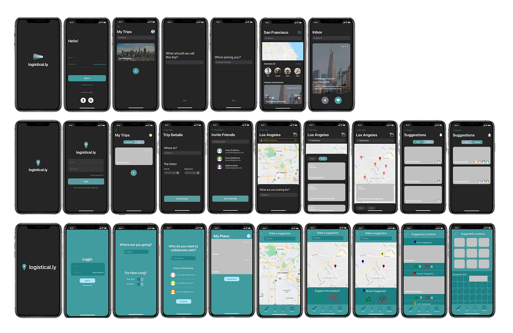
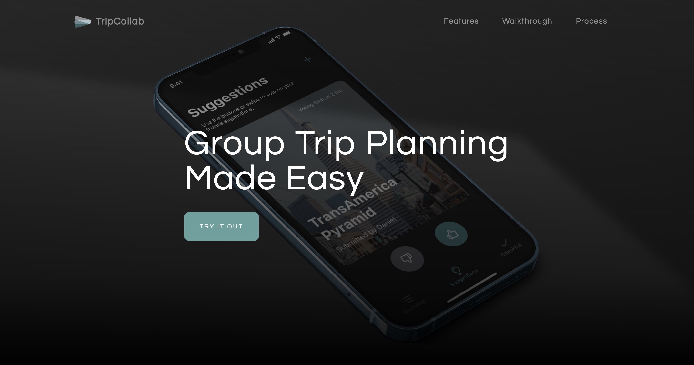

TripCollab is a conceptual application created as part of a senior level interface design course at Simon Fraser University. My team and I selected a target design domain, conducted user research to identify their common goals and activities, and designed a mobile app prototype to address their needs.
As a Product Designer, I conducted user interviews and usability tests, created wireframes, user flows, and prototypes, and developed a product website to highlight the key features of our application.
The final deliverables included a prototype of the conceptual mobile application (link) and a product website (link).
Isabelle Louie, Bryan To, Nick Spanos
7 weeks (Oct - Dec 2020)
Figma, Framer, Illustrator, Photoshop
Create a trip plan or join an existing plan. Invite your friends to collaborate!
Suggest places to visit during your trip and vote on your friends suggestions.
Check off the places you've visited with the built-in checklist.
Our first deliverable was to establish a target audience, understand the challenges they face, and brainstorm potential design solutions. We decided to focus on business travelers who want to maximize their time on business trips while maintaining a work-life balance.
To understand the needs of our target audience, I led 1 user interview and conducted additional secondary research, then consolidated research findings into a user persona.
– Participant 1, Senior Systems Analyst
(National Car Rental, 2018)
Based on our research, each team member generated one idea for an app that would address our audience's needs while considering the design requirements of a functional sensor/API.
My proposed concept was Logistical.ly, a trip planning app designed to help users maximize time spent with clients by selecting optimal venues to minimize travel time between locations.

Wireframe sketches of my initial concept, Logistical.ly
My concept was chosen as our team's primary design direction, to create an app that provides trip planning and suggestions all in one place. The next step was to elaborate on my initial user flow by mapping out key interactions and incorporating the Maps API. This refined concept would provide our persona with the ability to plan trips with ease and generate an itinerary that she could share with her colleagues.

Wireframe sketches of the user interaction flow. The top row of sketches are my own
Based on the critique we received in the previous week, we recognized that the direction we had chosen for our application was already too entrenched in the market to see any kind of real success, so we set out to redefine what Logistical.ly could offer for a different demographic.
Our refined idea focused on providing users with a collaborative platform to plan trips with friends by adding suggestions for places to visit and voting on suggested locations so every member of the group can share their input.
To ensure that our refined direction addressed the needs and pain points of the new target audience, our team conducted additional secondary research.
(Wyndham Vacation Rentals, 2017)
(Wyndham Vacation Rentals, 2017)
Since we had to refocus the direction of our application, we also needed to reshape our user flow, so each team member created their own user flow design based on a unifying style guide.
Wireframes of three user flow concepts. The middle row of wireframes are my own.
This prototype featured a fully fleshed out user flow, a refined interface design, microinteractions for specific actions, and an integrated use of a Maps API.

A consolidated design featuring the best aspects of our individual user flow designs
The usability studies were conducted over Discord, using screen sharing and a think-aloud technique. Our participants were avid travellers prior to the COVID-19 pandemic, often travelled alongside friends, and had a minimal to moderate budget.
"The map view did not provide useful or relevant information and the visual cue (arrow) to bring up list view was too small and hard to notice." – Participant 1
"I couldn't tell whether my suggestion was added or not." – Participant 2
"Having the map on the checklist tab was confusing and not what I expected." – Participant 2
Based on these findings, we created an improvement plan for our final design, focusing on incorporating clearer visual cues, conveying more feedback through microinteractions, establishing stronger hierarchy within our interface, and providing more context to the our key features through the use of microcopy.

First iteration of the Suggestions page

First iteration of the Checklist page

First iteration of the Checklist page

Refined icons to better indicate liking/disliking a suggestion
In the final stage of development, we decided to change the name of our application from Logistical.ly to TripCollab to better reflect the purpose of our application, which had evolved over the iterative design process. In terms of final refinements, we focused on improving the clarity of our microcopy and microinteractions so the user would feel no uncertainty while using TripCollab. The end result is a seamless, interactive planning experience that follows the user's journey from the start of the plan until the end of the trip.
To conclude this project, I created a product website to highlight the key features of our application, showcase the context in which it would be used, and allow users to try out our prototype for themselves.
Final product website for TripCollab
This project allowed me to gain hands-on experience in bringing an idea to life. I was able to develop my user experience research skills by conducting user interviews in the initial ideation stage, and I also discovered the importance of user testing. During our testing and refining stage, we were able to use the feedback provided by real users as well as critiques from the teaching staff to successfully address any usability and user experience issues that may have hindered the effectiveness of our design.
Furthermore, this group project provided an opportunity for me to strengthen my time management, communication, and collaboration skills, as our team was required to present weekly deliverables to showcase the development of our design. Our team excelled in delegating and assigning tasks to members, setting deadlines for individual deliverables, and collaborating efficiently during team meetings to complete our team deliverables well in advance of deadlines.